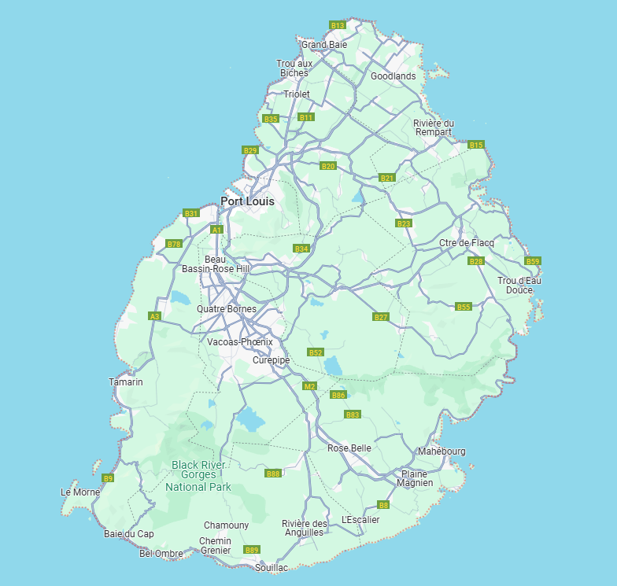
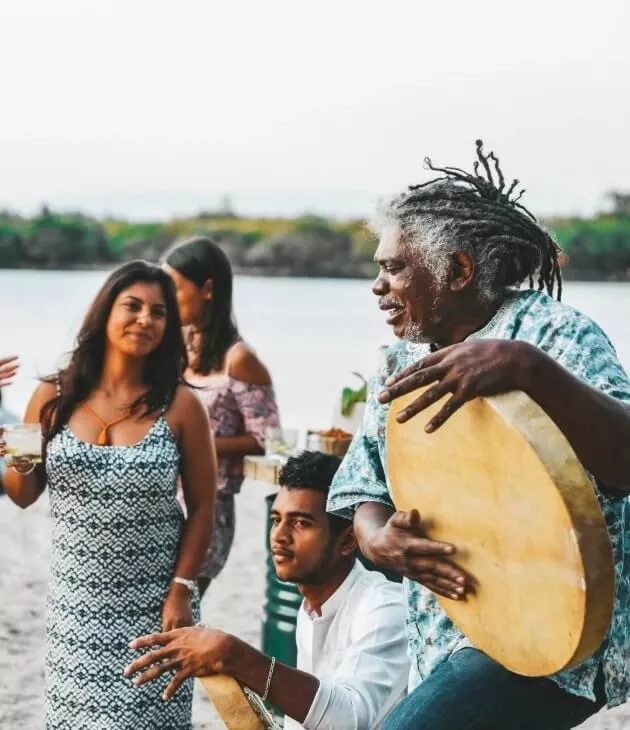
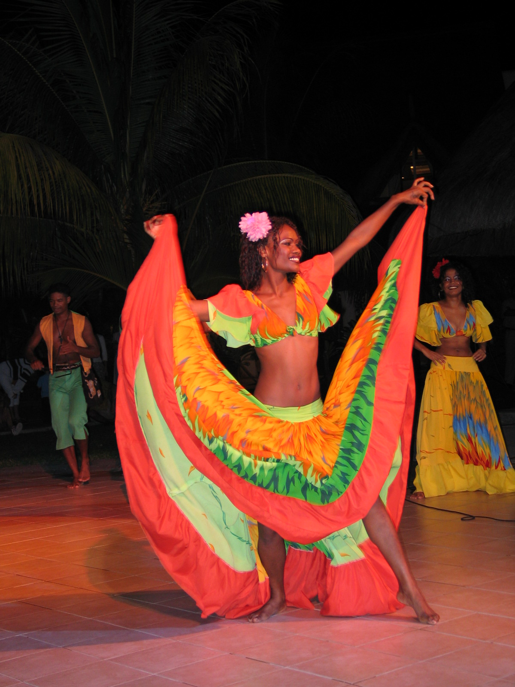

La culture mauricienne est un véritable métissage qui mêle des influences indiennes, africaines, chinoises et européennes

Le créole mauricien est la langue principale
du quotidien et le lien d'union entre les communautés,
l'anglais est la langue officielle et le français est
très largement utilisé dans les médias et la vie courante

L'île est un modèle de tolérance où coibitent
le christianisme, l'islam, l'indouisme et le bouddhisme

Le séga est le genre musical, chanté et
dansé emblématique de l'île Maurice.
Né au sein des populations esclaves africaines et malgaches,
il est inscrit depuis 2014 sur la Liste représentative du
patrimoine culturel immatériel de l'humanité de l'UNESCO.